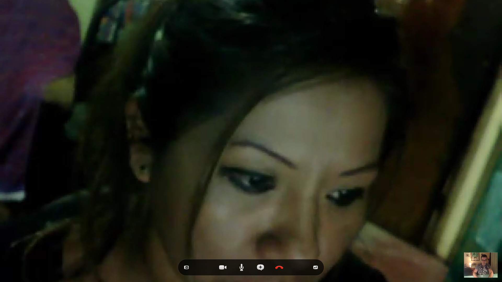

Seguimos fedellando!
Este vai ser unha entrada de proba sen máis.
Non é real, só quero fedellar no Ghost
Introducir una cita aparece aquí
Tamén vou elaborar listas tal que esta:
- Uno
- Dos
- Tres
Y así, incluso en negrita y español puedo terminar, incluyendo una imagen cualquiera. Tal que esta misma que pongo bajo estas líneas mediante el comando
